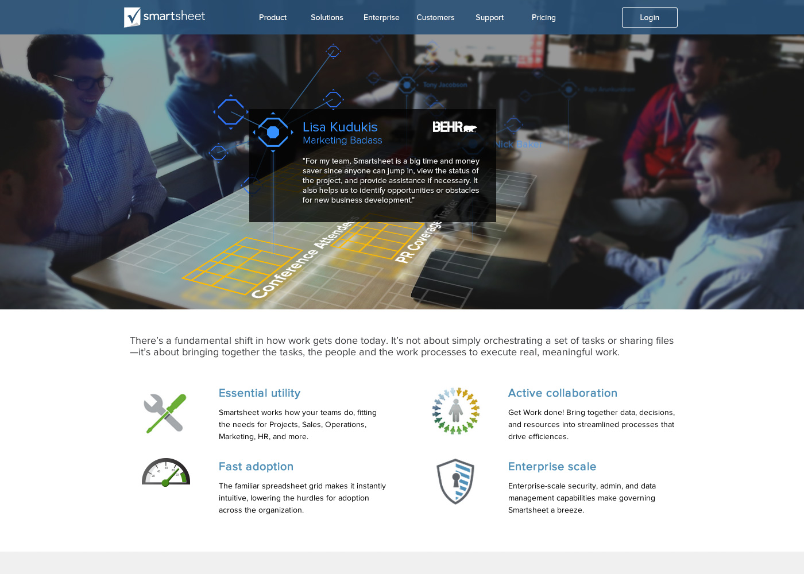

Smartsheet
Product Design
I designed a number of features for the Smartsheet web app between 2013 and 2015. I worked with product managers, engineers, and executives who acted as primary stakeholders in these early days.
Resource Management: This feature allowed sheet owners, usually project managers, to view the availabilty of their team. Smartsheet was first a project management tool so this was a core feature at the time.
Smartsheet attachment workflow: Attaching files to a spreadsheet was a key feature that made Smartsheet stand out from their competitors at the time. I designed a more robust and refreshed version of their earlier implementation.
Marketing
I worked on a number of marketing efforts for smartsheet including web design and development, email marketing campaigns, and social media asset development. All of these involved the creation of templates and frameworks for the team to use
Email Marketing campaign: The first version of a robust enterprise sales funnel started with this template. I designed and built this with the dark arts of email compliant html.
Partner web page content: I designed and built pages for our third party integrations for companies like Google, Dropbox, and Zapier
Visual design exploration: Throughout my time at the sheet I designed and built multiple homepage and landing page variations to increase signups and enhance our brand.
Community website: I designed and built the Smartsheet Community site used by hundreds of customers at launch. This site reduced the workload of our support teams while building a sense of community within our customer base.

Android App
It’s been a while since this app was released but still something I’m proud of. Smartsheet was in need of an android app to parody features from their existing iOS app. After initial designs were put out, the decision was made to launch features not in the iOS app. Android was the perfect testbed for mobile features before adding them to iOS which we predicted would have a much larger install base than our yet to be released Android app.
Mobile design is a fun change of pace from designing desktop software. The limitations from screen size and interaction method are fun challenges, especially when designing for a product like smartsheet. Spreadsheets are notoriously not mobile friendly.
I was the sole designer on this project. I worked closely with the mobile developer and the testing team. There were quite a bit of changes to the basic design. This was one of the first projects I worked on that had a lot of C level people interested. With that much scrutiny from people at the top of an organization, it’s important to keep it together and say no sometimes, even if it’s scary. CEOs don’t always know what’s best, that’s why they hire us! Of course, if they are bothered by something, it’s also important to take their feedback and give it an honest assessment. They wouldn’t be in their position if they didn’t know what they were doing at least a little.
Ultimately, our android app ended up following a lot of the standard google style guidelines from the time. I did create custom iconography and assets to use on what was, at the time, a platform capable of higher resolutions. Android also introduced 9-slicing and unique methods to scale content for different screen sizes. It was a project that I learned a lot from and knowledge that has helped me for years.
Started with sketches

Simple wireframes with user flow

Hand off ready designs for the dev team
Mockup for the play store and marketing campaigns